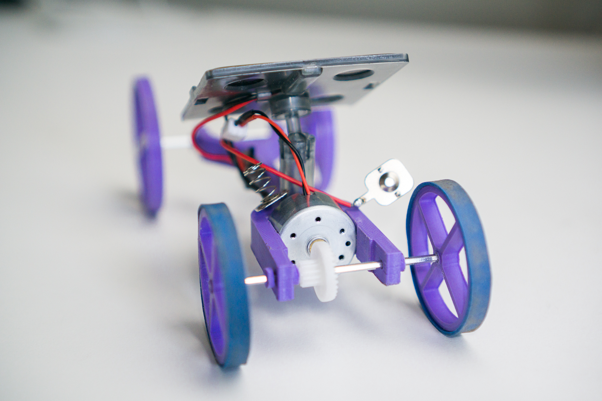

3D Printed Solar Car
A miniature solar speedster created for a CAD and design class


The task for my MAE 94 (CAD, Drafting and rapid prototyping) course was to design and build a functional miniature solar vehicle using the provided motor, gears, solar panel and axles in conjuction with our own designed and 3D printed parts. The solar car was judged by how fast it could travel 20 feet over the tiled surface of an outdoor patio, from an initially stationary position. Parts of the car could begin spinning or moving before the time is counted as long as the entire car is did not exhibit net motion. The design constraints were as follows:
(1) The entire car must not be larger than 0.1 x 0.1 x 0.2 m3
(2) It must not be than 150g
(3) Can only be powered by the provided solar panel and DC motor
(4) The car can only consist of the provided parts (2 axles, screws, two gears, dc motor, solar panel, solar panel mounting hardware), 3D printed ABS or PLA components.
(5) Adhesives can be used to hold parts together
(6) Rubber Bands may be used for wheel traction
(7) All printed parts must be fabricated on a UCLA printer, accessible to all students.
I focused on making the design easy to print, avoiding too many overhangs and high tolerances. Because the motor specifications were not known, wheel sizes were initally chosen arbitrarily to fit with the bounding box and other components.


Initially, the 3 wheeled design was created and further developed until I learned that the included screws did not fit the motor casing. The second design was then created to integrate the motor mount into the chasis to simplify printing and assembly. All the provided components were measured and then modeled in SolidWorks. The wheels and chasis were modeled accounting for allowances in the clearance and press fits and printer precision.

The entire car was modeled, then combined in an assembly. Two wheel sizes were created to see which would be faster when mounted on the driving axle. The parts were printed on an Ultimaker 3 using purple PLA filament. The motor mount required a little sanding to prevent the chasis from deflecting too much in the rear. Rubberbands were wrapped around the wheels to increase the traction. The cars were tested in the afternoon on a day with moderate sun as it was beginning to set. The fully assembled car weighed 60g and travelled the 20ft distance in 7.53s, the fastest times of any of the cars tested.